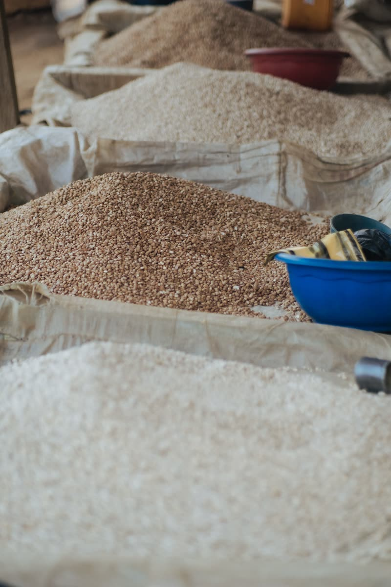

Pay after you see the lot
You approve photos, video and the lab report for your lot before the balance payment is released.

Saudi Arabia, the UAE, Kuwait, Qatar, Oman and Bahrain: we buy dry food, vegetables and fish for you in Bangladesh and check Arabic labels, Halal certificates and market rules before the container is sealed.
In short: The Gulf is the largest market for Bangladeshi dry food. The UAE is the top buyer of Bangladeshi spices, with Kuwait and Oman also in the top five (OEC: Bangladesh spice exports by destination), and Saudi Arabia, the UAE and Kuwait are the main markets for Bangladeshi dried fish (The Financial Express: how shutki can be a mainstay of Bangladesh's fisheries exports). We make sure each shipment meets GCC labelling, Halal and registration rules before it leaves Bangladesh.
| Market | Key rule | Transit |
|---|---|---|
| Saudi Arabia | Fish plants must appear on the SFDA list of approved Bangladeshi establishments. | 14–20 days to Jeddah or Dammam |
| The United Arab Emirates | Products and labels are registered with the emirate's food control authority before import. | 14–18 days to Jebel Ali; 1 day by air to Dubai |
| Kuwait | Imported food is registered and released by Kuwait's Public Authority for Food and Nutrition (PAFN). | 18–25 days to Shuwaikh or Shuaiba, usually via Jebel Ali or Colombo; 1 day by air to Kuwait City |
| Qatar | Food imports are checked by the Ministry of Public Health before release. | 16–22 days to Hamad Port, usually via Jebel Ali or Colombo; 1 day by air to Doha |
| Oman | Food imports are controlled by Oman's Food Safety and Quality Center. | 12–18 days to Sohar or Muscat (Sultan Qaboos Port), often via Jebel Ali; 1 day by air to Muscat |
| Bahrain | GCC (GSO) standards apply, including Arabic labelling with production and expiry dates. | Usually via Jebel Ali or Dammam |
Ramadan 2027
Why buyers order through goodbuyfoods.com
Each promise is written into your offer, so you can hold us to it.
You approve photos, video and the lab report for your lot before the balance payment is released.
FOB, freight, insurance and our fee shown line by line. No hidden margin from suppliers: we take no supplier commission.
On the Complete service, if a lot we released does not match the agreed specification, our full fee for that shipment is refunded.
Dried fish, rice, spices, snacks and oil from different suppliers consolidated into one container where the products can travel together.
Arabic, Bangla and English. WhatsApp answered seven days a week; quotes within 24 working hours.
Your specifications, labels and last prices stay on file, so repeat orders and Ramadan programmes take one message.
FAQ
Mainly spices, dried fish, frozen fish, aromatic rice, puffed and flattened rice, semai, biscuits, snacks, juices and fresh vegetables, for supermarkets, wholesalers and the large Bangladeshi community in the region.
Yes. Our site is available in Arabic, and we handle enquiries, offers and label checks in Arabic, English and Bangla, including on WhatsApp.
In Saudi Arabia the importer registers the establishment and the food products on the SFDA's Ghad platform before clearance. We prepare the product specifications, label text and certificates you need for registration.
We source products with Halal certificates from bodies your market accepts wherever Halal is required or requested, and we verify each certificate with the issuing body.
About 12–25 days by sea from Chattogram, depending on the port and the transhipment hub, and one day by air from Dhaka for fresh vegetables and chilled products.
For Gulf importers
Send the products, packs and port. We reply with a price offer within 24 hours, with label and Halal checks included.